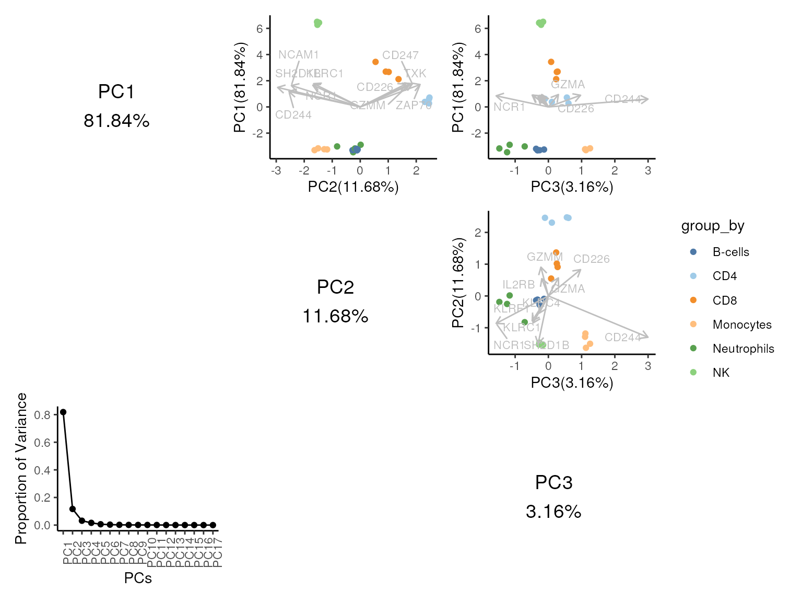
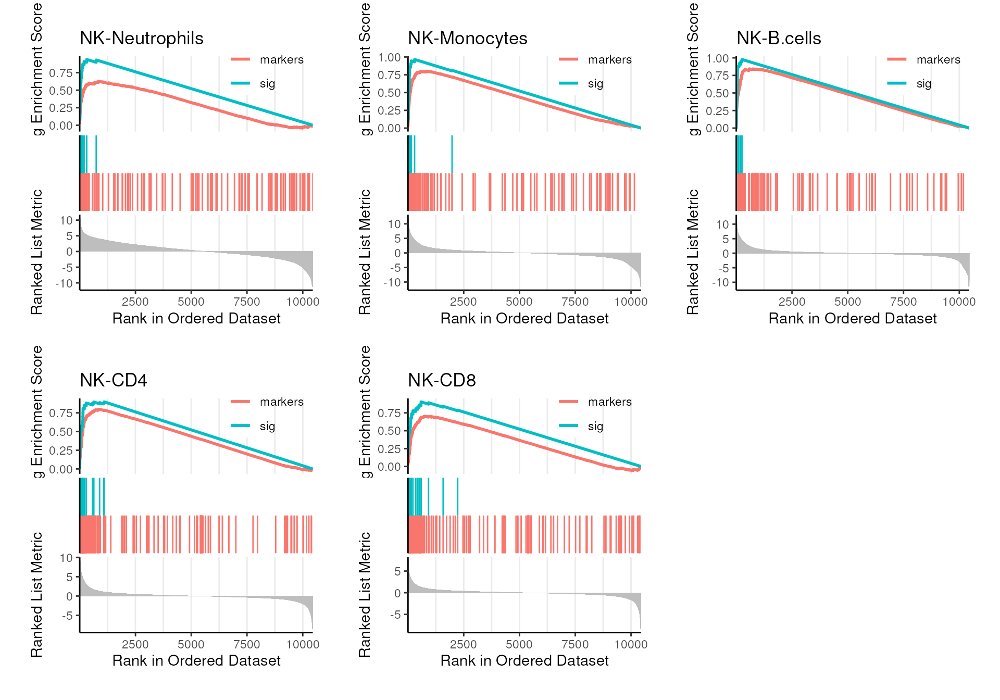

mastR_Demo
Jinjin Chen
Bioinformatics Division, Walter and Eliza Hall Institute of Medical Research, Parkville, VIC 3052, AustraliaDepartment of Medical Biology, University of Melbourne, Parkville, VIC 3010, Australiachen.j@wehi.edu.au
09 Mar 2023
Source:vignettes/mastR_Demo.Rmd
mastR_Demo.RmdIntroduction
- Why do we need imm sigs (cell type)
Tumour immune microenvironment (TIME) is reported to be highly associated with prognosis and various treatment response to many kinds of cancers. It’s also proved that tumour infiltrating lymphocytes (TILs) play an essential role in tumour progression, metastasis and treatment response. Thus, to identify the extent or population of the specific immune subset in specific tissue type, would be an interesting topic for many immunologists.
But to annotate cell types, estimate cellular composition or identify sample states (activities), refined signature is needed for the specified cells, which always requires large amount of manual work of experts. To save time and reduce manual labor work, mastR is developed to automatically screen signature for users interest.
- What this package does
This report demonstrates how to use the functions in R package
mastR 0.1.0 to screen immune subset signatures in specific
tissue and visualize the effects of the curation.
mastR is developed to screen immune cells signature in
cancer tissues. So there are several datasets imported into this package
for running by default. But users could specify other immune subsets and
other tissues by setting the parameters in the R functions. Next, this
report will show how the workflow runs to refine NK cells signatures
which are specific for CRC, and how to visualize the results effect.
How does mastR screen the signature
step 1. markers pool generation
Markers pool can be built from MSigDB, PanglaoDB or LM7/LM22 by our imported functions, if users have any preliminary knowledge about the target group type (cell type). All genes in the pool will be reserved for DE analysis even failed the filtration.
The final signature will only be the intersected genes with the markers pool. The whole gene list of the data will be regarded as the markers pool if no preliminary result or intereted genes are provided. But note thatmarkers = NULLwon’t keep any special genes if they fail the filtration by edgeR.-
step 2. screen markers for group specificity
- process data
Data will be filtered by given cutoff, all gene with low expression will be removed by edgeR. If the given data is raw count data, further normalization ‘TMM’ and fit bylimma::voom()will be done.
Then final linear model will be fitted and passed tolimma::treat()to compute gene statistics for DE analysis.
- process data
- DE analysis
- DE analysis
- feature selection based on rank product
- feature selection based on rank product
- intersect with markers pool
-
step 3. screen markers for cancer/tissue specificity
- filter out cancer cell expressed genes
Collect all interested cancer cell lines from CCLE (default), compute the quantile (25% percentile default) expression of all non-0 expressed genes. Only keep genes with median expression < quantile cutoff in cancer cells. Then keep the intersected genes with markers pool.
By doing this, we can guarantee the activity of our final signature for infiltrating immune cells won’t be affected by tumor purity when it’s applied on tumor samples.
- optional DE analysis to compare tumor infiltrating immune cells vs normal immune cells (e.g. PBMC or normal tissue resident immune cells), add DEGs into markers pool or combine it with the result of step 2. to increase tissue/cancer specificity.
- filter out cancer cell expressed genes
-
step 4. combine results of step 2 & 3
- single dataset
Keep the intersection of step 2 and 3 results.
- single dataset
- multiple datasets After 4. a), choose one assemble method to aggregate signature lists generated by different datasets. Robust Rank Aggregation (“RRA”) is the default method to do this in mastR, which detects genes that are ranked consistently better than expected under null hypothesis of uncorrelated inputs and assigns a significance score for each gene. It’s better than “RemoveBatchEffect” sometimes.
-
step 5. visualize signature performance
- Use multiple visualization ways to assess the performance of screened signature.
-
Applications
- score samples
- estimate cellular proportion
- single cell annotation
Installation
Install mastR R package from GitHub. The most updated
version of mastR is hosted on GitHub and can be easily
installed using devtools::install_github() function
provided by devtools.
# if (!requireNamespace("devtools", quietly = TRUE)) {
# install.packages("devtools")
# }
# if (!requireNamespace("mastR", quietly = TRUE)) {
# devtools::install_github("Gene233/mastR")
# }
if (!requireNamespace("BiocManager", quietly=TRUE)) {
install.packages("BiocManager")
}
if (!requireNamespace("mastR", quietly = TRUE)) {
BiocManager::install("mastR")
}Step 1. Prepare Immune Markers Pool
Load Datasets
Here’s step 1. To screen the immune subset signatures, we have to load the example datasets. The datasets used in this report have been built within the package or can be accessed publicly. You can use the following scripts to load them into your R environment.
NK_markers dataset is a combination of CIBERSORT LM7,
LM22 and human orthologs in mice from Huntington.
It contains 114 genes in total.
LM7 and LM22 are signature matrices, you
can get more details by ?mastR::LM7 or
?mastR::LM22.
im_data_6 is a eSet object, containing RNA-seq TMM
normalized counts data of 6 sorted immune subsets. More details in
?mastR::im_data_6.
library(mastR)
#>
library(ggplot2)
library(GSEABase)
#> Loading required package: BiocGenerics
#>
#> Attaching package: 'BiocGenerics'
#> The following objects are masked from 'package:stats':
#>
#> IQR, mad, sd, var, xtabs
#> The following objects are masked from 'package:base':
#>
#> anyDuplicated, aperm, append, as.data.frame, basename, cbind,
#> colnames, dirname, do.call, duplicated, eval, evalq, Filter, Find,
#> get, grep, grepl, intersect, is.unsorted, lapply, Map, mapply,
#> match, mget, order, paste, pmax, pmax.int, pmin, pmin.int,
#> Position, rank, rbind, Reduce, rownames, sapply, setdiff, sort,
#> table, tapply, union, unique, unsplit, which.max, which.min
#> Loading required package: Biobase
#> Welcome to Bioconductor
#>
#> Vignettes contain introductory material; view with
#> 'browseVignettes()'. To cite Bioconductor, see
#> 'citation("Biobase")', and for packages 'citation("pkgname")'.
#> Loading required package: annotate
#> Loading required package: AnnotationDbi
#> Loading required package: stats4
#> Loading required package: IRanges
#> Loading required package: S4Vectors
#>
#> Attaching package: 'S4Vectors'
#> The following objects are masked from 'package:base':
#>
#> expand.grid, I, unname
#> Loading required package: XML
#> Loading required package: graph
#>
#> Attaching package: 'graph'
#> The following object is masked from 'package:XML':
#>
#> addNodeNK markers from Curson’s Publication
## show what NK_markers looks like:
data("NK_markers")
NK_markers
#> # A tibble: 114 × 4
#> HGNC_Symbol LM22 LM7 Huntington
#> <chr> <chr> <chr> <chr>
#> 1 APOBEC3G TRUE - -
#> 2 APOL6 TRUE - -
#> 3 AZU1 TRUE - -
#> 4 BPI TRUE - -
#> 5 CAMP TRUE - -
#> 6 CCL4 TRUE - -
#> 7 CCL5 TRUE - TRUE
#> 8 CCND2 TRUE - -
#> 9 CD160 TRUE - -
#> 10 CD2 TRUE - -
#> # … with 104 more rowsMarkers from LM
Users can extract markers for subsets matched to the given regex
pattern from imported data LM7/LM22.
The matched genes will be saved in ‘GeneSet’ class object, if both pattern are provided, the output would be a ‘GeneSetCollection’ class object with setName: LM7, LM22.
data("LM7", "LM22")
## only retrieve LM7
get_lm_sig(lm7.pattern = "^NK")
#> setName: LM7
#> geneIds: CD244, FASLG, ..., XCL2 (total: 21)
#> geneIdType: Symbol
#> collectionType: Null
#> details: use 'details(object)'
## only retrieve LM22
get_lm_sig(lm22.pattern = "NK cells")
#> setName: LM22
#> geneIds: APOBEC3G, APOL6, ..., ZNF135 (total: 79)
#> geneIdType: Symbol
#> collectionType: Null
#> details: use 'details(object)'
## collect both LM7 and LM22
LM <- get_lm_sig(lm7.pattern = "^NK", lm22.pattern = "NK cells")
LM
#> GeneSetCollection
#> names: LM7, LM22 (2 total)
#> unique identifiers: CD244, FASLG, ..., ZNF135 (92 total)
#> types in collection:
#> geneIdType: SymbolIdentifier (1 total)
#> collectionType: NullCollection (1 total)
## show upset diagram
gsc_plot(LM)
Markers from MSigDB
The users can specify the species, cat,
subcat and pattern to decide which genesets to
be added.
All genesets with geneset name matched to the pattern in
the whole MSigDB would be extracted if cat and
subcat are not set, otherwise only the genesets under the
union of cat and subcat would be searched.
By setting plot = TRUE, an UpSetR plot across matched
genesets would be printed.
## collect all "natural killer mediated" relavent genesets from MSigDB
# MSig <- get_gsc_sig(gsc = "msigdb",
# pattern = "NATURAL_KILLER_CELL_MEDIATED",
# cat = "c5", subcat = "GO:BP",
# version = '7.4',
# species = "hs")
data("msigdb_gobp_nk")
MSig <- get_gsc_sig(gsc = msigdb_gobp_nk,
pattern = "NATURAL_KILLER_CELL_MEDIATED")
MSig
#> GeneSetCollection
#> names: GOBP_NATURAL_KILLER_CELL_MEDIATED_IMMUNITY, GOBP_NATURAL_KILLER_CELL_MEDIATED_CYTOTOXICITY_DIRECTED_AGAINST_TUMOR_CELL_TARGET, ..., GOBP_POSITIVE_REGULATION_OF_NATURAL_KILLER_CELL_MEDIATED_CYTOTOXICITY (18 total)
#> unique identifiers: AP1G1, ARRB2, ..., KLRC4-KLRK1 (67 total)
#> types in collection:
#> geneIdType: SymbolIdentifier (1 total)
#> collectionType: BroadCollection (1 total)
## show upset diagram of collected gene-sets
gsc_plot(MSig)
## merge all genesets into one
MSig <- merge_markers(MSig)
setName(MSig) <- "MSigDB"Markers from PanglaoDB
Users can use list_panglao_organs() and
list_panglao_types() functions to list all available organs
and cell types on PanglaoDB website and use
get_panglao_sig() function to retrive them.
## show availbable organs on PanglaoDB
list_panglao_organs()
#> [1] "Adrenal glands" "Blood" "Bone"
#> [4] "Brain" "Connective tissue" "Embryo"
#> [7] "Epithelium" "Eye" "GI tract"
#> [10] "Heart" "Immune system" "Kidney"
#> [13] "Liver" "Lungs" "Mammary gland"
#> [16] "Olfactory system" "Oral cavity" "Pancreas"
#> [19] "Parathyroid glands" "Placenta" "Reproductive"
#> [22] "Skeletal muscle" "Skin" "Smooth muscle"
#> [25] "Thymus" "Thyroid" "Urinary bladder"
#> [28] "Vasculature" "Zygote" "Other"
## show available cell types of interest organ on PanglaoDB
## Number in the bracket represents the number of markers for each cell type (in both Homo and Mus).
list_panglao_types(organ = "Immune system")
#> [1] "B cells (110)"
#> [2] "B cells memory (66)"
#> [3] "B cells naive (69)"
#> [4] "Basophils (82)"
#> [5] "Dendritic cells (133)"
#> [6] "Eosinophils (30)"
#> [7] "Gamma delta T cells (66)"
#> [8] "Macrophages (153)"
#> [9] "Mast cells (162)"
#> [10] "Megakaryocytes (48)"
#> [11] "Monocytes (102)"
#> [12] "Myeloid-derived suppressor cells (17)"
#> [13] "Natural killer T cells (24)"
#> [14] "Neutrophils (80)"
#> [15] "NK cells (98)"
#> [16] "Nuocytes (12)"
#> [17] "Plasma cells (86)"
#> [18] "Plasmacytoid dendritic cells (58)"
#> [19] "Red pulp macrophages (12)"
#> [20] "T cells (107)"
#> [21] "T cytotoxic cells (8)"
#> [22] "T follicular helper cells (13)"
#> [23] "T helper cells (62)"
#> [24] "T memory cells (63)"
#> [25] "T regulatory cells (21)"
## collect all "NK cells" markers from PanglaoDB website
Panglao <- get_panglao_sig(type = "NK cells")
Panglao
#> setName: PanglaoDB
#> geneIds: ITGAM, ITGAX, ..., CD8A (total: 80)
#> geneIdType: Symbol
#> collectionType: Null
#> details: use 'details(object)'
## number differs from 'NK cells' under list_panglao_types(organ = "Immune system"), because we only keep 'Hs' markers.Integrate Markers Pool
Finally, all markers can be merged into one ‘GeneSet’ object by using
function merge_markers().
The input can be a list of vectors of genes, or a list of GeneSet
objects, or a GeneSetCollection object. plot = TRUE
requires the list to have > 1 elements.
nk_m <- NK_markers$HGNC_Symbol |>
GeneSet(geneIdType = SymbolIdentifier(), setName = "NK_markers")
gsc <- GeneSetCollection(c(nk_m, LM, MSig, Panglao))
Markers <- merge_markers(gsc)
## upset plot
gsc_plot(gsc)
Markers
#> setName: merged_markers_pool
#> geneIds: APOBEC3G, APOL6, ..., CD8A (total: 200)
#> geneIdType: Symbol
#> collectionType: Computed
#> details: use 'details(object)'
## to show the table summary of merged list
head(jsonlite::fromJSON(GSEABase::longDescription(Markers)))
#> Gene NK_markers LM7 LM22 MSigDB PanglaoDB
#> 1 ADAMTS14 - - - - TRUE
#> 2 AHR - - - - TRUE
#> 3 AP1G1 - - - TRUE -
#> 4 APOBEC3G TRUE - TRUE - -
#> 5 APOL6 TRUE - TRUE - -
#> 6 ARRB2 - - - TRUE -Screen Immune Subset Signatures
Step 2. Specify Markers Against Other Immune Subsets
You can use celldex::DatabaseImmuneCellExpressionData()
to load a large collection of 1561 bulk RNA-seq samples generated by
DICE from pure populations of human immune cells. It contains 5 main
cell types and 15 fine cell types. Here to save time, we use our example
data im_data_6 as input.
The example uses im_data_6 from GSE60424.
-
im_data_6consists 6 immune subsets * 4 samples, the data type is ‘TMM normalized counts data’.
Only samples from healthy individuals are kept, and ‘Whole Blood’ or ‘PBMC’ cells are removed in dataset.
data("im_data_6")
im_data_6
#> ExpressionSet (storageMode: lockedEnvironment)
#> assayData: 50045 features, 24 samples
#> element names: exprs
#> protocolData: none
#> phenoData
#> sampleNames: GSM1479438 GSM1479439 ... GSM1479525 (24 total)
#> varLabels: title geo_accession ... years since diagnosis:ch1 (66
#> total)
#> varMetadata: labelDescription
#> featureData: none
#> experimentData: use 'experimentData(object)'
#> pubMedIds: 25314013
#> Annotation: GPL15456
idx <- c(
"lib.size", "donorid.ch1", "smoker.ch1",
"cellcount.ch1", "collectiondate.ch1",
"celltype.ch1", "gender.ch1"
)
edgeR::DGEList(
counts = exprs(im_data_6),
samples = pData(im_data_6)
)[["samples"]][, idx]
#> lib.size donorid.ch1 smoker.ch1 cellcount.ch1 collectiondate.ch1
#> GSM1479438 1800344 44 -- 14737500 June 26 2012
#> GSM1479439 1198738 44 -- 2000000 June 26 2012
#> GSM1479440 917827 44 -- 1012333 June 26 2012
#> GSM1479441 815853 44 -- 1071990 June 26 2012
#> GSM1479442 911138 44 -- 1011154 June 26 2012
#> GSM1479443 743059 44 -- 379236 June 26 2012
#> GSM1479499 1985823 20 -- 42250000 January 25 2012
#> GSM1479500 1113175 20 -- 2000000 January 25 2012
#> GSM1479501 823759 20 -- 2000000 January 25 2012
#> GSM1479502 802268 20 -- 2000000 January 25 2012
#> GSM1479503 761037 20 -- 1500000 January 25 2012
#> GSM1479504 761050 20 -- 285000 January 25 2012
#> GSM1479506 1888834 21 -- 3700000 February 2 2012
#> GSM1479507 1137698 21 -- 2000000 February 2 2012
#> GSM1479508 907916 21 -- 363469 February 2 2012
#> GSM1479509 789451 21 -- 2000000 February 2 2012
#> GSM1479510 799980 21 -- 2000000 February 2 2012
#> GSM1479511 828570 21 -- 147461 February 2 2012
#> GSM1479520 1876949 53 -- 17887500 August 21 2012
#> GSM1479521 1157574 53 -- 2000000 August 21 2012
#> GSM1479522 895130 53 -- 682371 August 21 2012
#> GSM1479523 801045 53 -- 2000000 August 21 2012
#> GSM1479524 880511 53 -- 2000000 August 21 2012
#> GSM1479525 818890 53 -- 140773 August 21 2012
#> celltype.ch1 gender.ch1
#> GSM1479438 Neutrophils F
#> GSM1479439 Monocytes F
#> GSM1479440 B-cells F
#> GSM1479441 CD4 F
#> GSM1479442 CD8 F
#> GSM1479443 NK F
#> GSM1479499 Neutrophils F
#> GSM1479500 Monocytes F
#> GSM1479501 B-cells F
#> GSM1479502 CD4 F
#> GSM1479503 CD8 F
#> GSM1479504 NK F
#> GSM1479506 Neutrophils F
#> GSM1479507 Monocytes F
#> GSM1479508 B-cells F
#> GSM1479509 CD4 F
#> GSM1479510 CD8 F
#> GSM1479511 NK F
#> GSM1479520 Neutrophils F
#> GSM1479521 Monocytes F
#> GSM1479522 B-cells F
#> GSM1479523 CD4 F
#> GSM1479524 CD8 F
#> GSM1479525 NK Fprocess data
To find the passing genes, low expression genes filtration needs to
be done first. process_data() can help to do this, when
normalize = TRUE, further normalization and voom fit will
be done after filtration. The data will be returned with filtered counts
(unfiltered counts data will be saved under “original”), vfit after
limma::voom() and tfit after limma::lmFit()
and limma::treat().
get_degs() function can filter low expression genes out
from immune dataset, normalize and fit voom model to data if
normalize = TRUE, then a processed data
proc_data object and a differentially expressed
GeneSetCollection (‘UP’ and ‘DOWN’) will be returned as output.
-
dataparam can be a bulk RNA-seq expression object with subset labels, can be matrix, eSet, DGEList, …
-
group_colparam can specify the column name of groups (labels), can be a vector whendatais a matrix.
-
target_groupparam can specify the cell target_group name of interest. Users can choose one name ingroup_colvector.
-
normalizeparam indicates if the input data is raw counts data. Ifnormalize = FALSE, the function would directly use the expression data per se to filter out genes instead of calculating CPM.
-
feature_selectionparam to choose whether to use rank product (‘rankproduct’) or ‘none’ to select DEGs from multiple comparisons of DE analysis, default ‘auto’ uses ‘rankproduct’ but change to ‘none’ if final genes < 5 for both UP and DOWN.
-
plot = TRUEwould visualize the QC results before and after filtration. It would make log hist plot, RLE plot, MDS plot and SA plot.
-
markersparam could specify a geneset to be kept no matter if they pass the filtration. Setting it toNULLcan skip this.
-
gene_idspecify the gene ID type of rownames of data when markers is not NULL, could be one of ‘ENSEMBL’, ‘SYMBOL’, ‘ENTREZ’…, default ‘SYMBOL’.
Let’s see what cell types are in im_data_6.
im_data_6$`celltype:ch1` |> unique()
#> [1] "Neutrophils" "Monocytes" "B-cells" "CD4" "CD8"
#> [6] "NK"
proc_data <- process_data(
data = im_data_6,
group_col = "celltype:ch1",
target_group = "NK",
markers = geneIds(Markers),
gene_id = "ENSEMBL", ## rownames of im_data_6 is ENSEMBL ID
summary = TRUE ## if to show the summary of tfit result
)
#> 'select()' returned 1:many mapping between keys and columns
#> No group or design set. Assuming all samples belong to one group.
#> NK-Neutrophils NK-Monocytes NK-B.cells NK-CD4 NK-CD8
#> Down 2554 2256 1740 1581 1187
#> NotSig 768 1675 2701 2923 3684
#> Up 2896 2287 1777 1714 1347
# summary(limma::decideTests(proc_data$tfit))mastR also provides visualizations for data process, to compare the
data before and after process_data() and see how well the
QC is done.
expr1 <- edgeR::cpm(proc_data$original_counts, log = TRUE)
expr2 <- proc_data$vfit$E
## plot expression distribution, RLE and MDS
plot_diagnostics(
expr1,
expr2,
group_col = proc_data$samples$celltype.ch1
)


#> NULL
## plot mean-variance trend
plot_mean_var(proc_data)
#> NULL
## plot PCA
pca_matrix_plot(expr1, group_by = proc_data$samples$celltype.ch1) +
pca_matrix_plot(expr2, group_by = proc_data$samples$celltype.ch1)
select DEGs
Then proc_data can be passed into select_sig() function
for further genes selection based on rank product scoring. Cell type
specific signature can be obtained by this.
-
feature_selectionparam to choose whether to use rank product (‘rankproduct’) or ‘none’ to select DEGs from multiple comparisons of DE analysis. Default “auto” will perform “rankproduct” and switch to “none” if the number of final “UP” and “DOWN” genes are < 5.
## get the same result as there's permutation test for rank product
set.seed(123)
sig_ct <- select_sig(tfit = proc_data$tfit)All above steps for screening subset signature can be done by one
integrated function get_degs().
DEG_6 <- get_degs(
data = im_data_6,
group_col = "celltype:ch1",
target_group = "NK",
plot = TRUE, ## show QC plots after filtration
markers = geneIds(Markers),
gene_id = "ENSEMBL" ## convert ensembl IDs of rownames into symbols if gene_id != "SYMBOL"
)
## `proc_data` object would be saved
proc_data <- DEG_6$proc_data
DEG_6$DEGs
GSEABase::geneIds(DEG_6$DEGs)
DEG_6$proc_data$vfit$design ## show the design matrixintersect with markers pool
Then we will only keep those UP regulated genes which are also in our
markers pool Markers.
We can see PCA shows clearer separation between NK cells and other cells by using screened UP DEGs. And intersected genes explain more variance in PC1 compared with non-intersected DEGs.
## convert ensembl IDs into symbols to match markers pool
deg_up <- mapIds(org.Hs.eg.db::org.Hs.eg.db,
geneIds(sig_ct[["UP"]]),
"SYMBOL", "ENSEMBL")
#> 'select()' returned 1:1 mapping between keys and columns
## markers specific for NK cells
m_ct <- intersect(geneIds(Markers), deg_up)
names(m_ct) <- names(deg_up)[match(m_ct, deg_up)] ## set ensembl ID as names for downstream visualization
m_ct
#> ENSG00000117281 ENSG00000122223 ENSG00000198821 ENSG00000172543 ENSG00000145649
#> "CD160" "CD244" "CD247" "CTSW" "GZMA"
#> ENSG00000197540 ENSG00000081985 ENSG00000100385 ENSG00000183542 ENSG00000150045
#> "GZMM" "IL12RB2" "IL2RB" "KLRC4" "KLRF1"
#> ENSG00000168060 ENSG00000149294 ENSG00000189430 ENSG00000168229 ENSG00000041353
#> "NAALADL1" "NCAM1" "NCR1" "PTGDR" "RAB27B"
#> ENSG00000164483 ENSG00000198574 ENSG00000074966 ENSG00000115085 ENSG00000134545
#> "SAMD3" "SH2D1B" "TXK" "ZAP70" "KLRC1"
#> ENSG00000150637 ENSG00000135077 ENSG00000027869 ENSG00000171476
#> "CD226" "HAVCR2" "SH2D2A" "HOPX"
## PCA shows clear separation of NK cells
pca_matrix_plot(proc_data$vfit$E[names(m_ct),],
group_by = proc_data$samples$celltype.ch1) +
pca_matrix_plot(proc_data$vfit$E[names(deg_up),],
group_by = proc_data$samples$celltype.ch1)
There’s a wrapper function filter_subset_sig() which can
directly do the whole in one step. The result would be the same as
running the workflow step by step
filter_subset_sig() can also be helpful when you have
multiple datasets. It can output final signature after aggregating
signature lists from all datasets by using “RRA”.
# run by wrapped function in one-step
set.seed(123)
m_ct <- filter_subset_sig(
data = im_data_6,
markers = geneIds(Markers),
group_col = "celltype:ch1",
target_group = "NK",
gene_id = "ENSEMBL"
)Step 3. Specify Markers Against Tissue
The example uses CCLE_tpm from DepMap CCLE, containing
RSEM quantified TPM data of 1392 cancer cell lines (until 2022.04).
To specify NK markers for CRC, use filter_non_tissue()
function to remove failing genes which are also highly expressed by CRC
adherent cell lines per se.
-
datacan be either “CCLE” or expression dataset, e.g. matrix, eSet, DGEList, Seurat and so on.
-
group_colparam is the group vector of input samples, or the name of group column.
-
target_groupparam is an expression pattern to specify the tissue of interest, here we choose ‘colorectal’ to select all colorectal adherent cell lines.
-
ignore.casemeans whether to ignore the capital or not.
-
log = TUREwould do log transformation to the data.
-
qparam is the threshold to remove failing genes. 0.25 means removing markers with median expression >= 25% percentile of non-zero expression of all genes.
-
markersparam is the updated markers pool.
CCLE <- depmap::depmap_TPM()
CCLE_meta <- depmap::depmap_metadata()
m_ccl <- filter_non_tissue(data = "CCLE",
group_col = "primary_disease",
target_group = "colorectal",
markers = geneIds(Markers),
ccle_tpm = CCLE,
ccle_meta = CCLE_meta)
## or without loading CCLE yourself
m_ccl <- filter_non_tissue(group_col = "primary_disease",
target_group = "colorectal",
markers = geneIds(Markers))For fast test, here we only selected 5 CRC cell line samples as a
small test dataset ccle_crc_5.
data("ccle_crc_5")
ccle_crc_5[1:10,]
#> An object of class "DGEList"
#> $counts
#> SNU283_LARGE_INTESTINE TGBC18TKB_LARGE_INTESTINE SW837_LARGE_INTESTINE
#> TSPAN6 4.91408610 6.045923 5.2570106
#> TNMD 0.17632277 0.000000 0.3334237
#> DPM1 6.94684781 6.724105 6.9242187
#> SCYL3 2.57773093 2.260026 2.9653225
#> C1orf112 3.85399565 3.835924 4.7618171
#> FGR 0.00000000 0.000000 0.1890338
#> CFH 0.08406426 4.115200 0.2509616
#> FUCA2 4.85549144 6.263034 6.9090530
#> GCLC 4.93404465 4.398487 5.8750428
#> NFYA 3.68144927 3.727920 4.0703893
#> SNU1040_LARGE_INTESTINE HT29_LARGE_INTESTINE
#> TSPAN6 5.16188768 4.39985467
#> TNMD 0.46466827 0.00000000
#> DPM1 6.67849451 6.71836163
#> SCYL3 2.48284828 2.78450398
#> C1orf112 3.32624970 3.46858332
#> FGR 1.48542683 0.01435529
#> CFH 0.05658353 4.08151007
#> FUCA2 5.96809075 5.35508676
#> GCLC 5.15583017 5.10097765
#> NFYA 4.81249823 4.32481060
#>
#> $samples
#> group lib.size norm.factors cancer
#> SNU283_LARGE_INTESTINE 1 49889.02 1 CRC
#> TGBC18TKB_LARGE_INTESTINE 1 49489.64 1 CRC
#> SW837_LARGE_INTESTINE 1 56426.42 1 CRC
#> SNU1040_LARGE_INTESTINE 1 54366.12 1 CRC
#> HT29_LARGE_INTESTINE 1 49232.06 1 CRC
## markers against for CRC cell lines
m_ccl <- filter_non_tissue(data = ccle_crc_5,
group_col = "cancer",
target_group = "CRC",
markers = geneIds(Markers))
## as CCLE is default setting, this can also be easily run without loading CCLE
# m_ccl <- filter_non_tissue(target_group = "colorectal",
# markers = geneIds(Markers))
head(m_ccl)
#> [1] "KIR2DL2" "KIR2DL5A" "KIR2DS2" "KIR2DS4" "KIR2DS5" "KLRA1P"Step 4. Final NK Cells Signature for CRC
Select the Signature which pass both criteria: cell type and cancer cell line.
sig_NK_CRC <- intersect(m_ct, m_ccl)
sig_NK_CRC
#> [1] "CD160" "CD244" "CD247" "CTSW" "GZMA" "GZMM"
#> [7] "IL12RB2" "IL2RB" "KLRC4" "KLRF1" "NAALADL1" "NCAM1"
#> [13] "NCR1" "PTGDR" "SAMD3" "SH2D1B" "ZAP70" "KLRC1"
#> [19] "CD226" "HAVCR2" "HOPX"Step 5. Visulize The Curation Effect
PCA matrix plot
To see if curated NK cells signatures have more distinguishable expression pattern from other immune subsets, we can use PCA plot again here to show it.
Loading can be drawn to show which genes are relevant to NK cells, and result shows most of signature genes are indicating NK cells.
## as proc_data shows better discrimination, use it for visualization
proc_data$voomE <- proc_data$vfit$E
pca_matrix_plot(
data = proc_data,
features = sig_NK_CRC,
group_by = "celltype.ch1",
gene_id = "ENSEMBL",
slot = "voomE"
)
#> 'select()' returned 1:many mapping between keys and columns
## loadings can be shown by setting loading = TRUE
pca_matrix_plot(
data = proc_data,
features = sig_NK_CRC,
loading = TRUE,
group_by = "celltype.ch1",
gene_id = "ENSEMBL",
slot = "voomE"
)
#> 'select()' returned 1:many mapping between keys and columns
#> Warning: ggrepel: 3 unlabeled data points (too many overlaps). Consider
#> increasing max.overlaps
#> Warning: ggrepel: 4 unlabeled data points (too many overlaps). Consider increasing max.overlaps
#> ggrepel: 4 unlabeled data points (too many overlaps). Consider increasing max.overlaps
Heatmap
result_heatmap() function can plot the original NK cells
markers and curated signatures expression pattern heatmaps in immune
datasets.
-
sigsparam is the final curated signature symbols, whilemarkersparam is the original markers pool.
-
scalecould specify thecolumnorrowto be scaled or no scaling bynone.
-
min_maxis used to decide if to apply min-max normalization to each row of expression data. -
normalizemeans whether to normalize and calculate logCPM or not.
- Users are able to specify the color of heatmap by setting
colorparam.
We can see the expression pattern of cutrated signature is more distinguishable in NK cells.
sig_heatmap(
data = proc_data,
sigs = sig_NK_CRC,
group_col = "celltype.ch1",
markers = geneIds(Markers),
gene_id = "ENSEMBL",
slot = "voomE"
)
#> 'select()' returned 1:many mapping between keys and columns
## for multiple datasets
# sig_heatmap(
# data = list(data_6 = im_data_6,
# proc_data = proc_data),
# sigs = sig_NK_CRC,
# group_col = c("celltype:ch1", "celltype.ch1"),
# markers = geneIds(Markers),
# normalize = TRUE,
# gene_id = "ENSEMBL",
# # col = colorRampPalette(c(rgb(1, 1, 0), "red"))(256) ## can customize heatmap color
# ) + patchwork::plot_layout(guides = "collect", ncol = 1)Rank Density Plot
Use sig_rankdensity_plot() function to make rank density
plot for all subsets in the data.
By setting aggregate = TRUE, only one plot for each cell
type with mean expression would be shown.
We might want to see the rank density plot in more than 1 datasets for comparison, this can be done by simply passing a list of datasets to function.
We can find, processed data shows more digstinguishable rankdensity distribution of screened NK signature genes.
# ## visualization on both original and processed data
# sig_rankdensity_plot(
# data = list(im_data_6 = im_data_6,
# process_Data = proc_data),
# sigs = sig_NK_CRC,
# normalize = c(TRUE, FALSE),
# group_col = c("celltype:ch1", "celltype.ch1"),
# gene_id = "ENSEMBL",
# slot = "voomE"
# )
## visualization on aggregated data
sig_rankdensity_plot(
data = proc_data,
sigs = sig_NK_CRC,
group_col = "celltype.ch1",
aggregate = TRUE,
gene_id = "ENSEMBL",
slot = "voomE"
)
#> 'select()' returned 1:many mapping between keys and columns
NK Score Boxplot
To see if the curated NK cells signatures have evident higher
abundance in NK cells than other immune subsets, use
sig_boxplot() function to make boxplot of the NK scores for
all subsets in the data.
NK score is calculated by singscore package.
Obviously, our signature always shows significantly higher score in NK cells.
sig_boxplot(
data = proc_data,
sigs = sig_NK_CRC,
group_col = "celltype.ch1",
target_group = "NK",
normalize = FALSE,
gene_id = "ENSEMBL",
slot = "voomE"
)
#> 'select()' returned 1:many mapping between keys and columns
## To make boxplots for more than 1 immune datasets at once:
# result_score_boxplot(data = list(data_6 = im_data_6,
# proc_data = proc_data),
# sigs = sig_NK_CRC,
# group_col = c("celltype:ch1", "celltype.ch1"),
# target_group = "NK",
# normalize = TRUE,
# gene_id = "ENSEMBL") *
# guides(col = "none")NK Signature Abundance Boxplot
result_exp_boxplot() function can also generate boxplot
of the NK signature abundance for all subsets in the data by setting
plot.score = FALSE.
It’s clear the score can increase the difference between NK cells and others.
sig_boxplot(
data = proc_data,
sigs = sig_NK_CRC,
group_col = "celltype.ch1",
target_group = "NK",
plot.score = FALSE,
gene_id = "ENSEMBL",
slot = "voomE"
)
#> 'select()' returned 1:many mapping between keys and columns
NK Signature Abundance Scatter Plot
To see if the curated NK cells signature shows higher specificity to
NK cells than other immune subsets. Use sig_scatter_plot()
function to make scatter plot of the NK signature abundance for all
subsets in the data.
Based on sactter plot result, we can actually do further filtration to improve signature specificity.
sig_scatter_plot(
data = proc_data,
sigs = sig_NK_CRC,
group_col = "celltype.ch1",
target_group = "NK",
xint = 4, yint = 4,
gene_id = "ENSEMBL",
slot = "voomE"
)
#> 'select()' returned 1:many mapping between keys and columns
## To make scatter plot for more than 1 immune datasets at once:
# sig_scatter_plot(
# data = list(data_6 = im_data_6,
# proc_data = proc_data),
# sigs = sig_NK_CRC,
# group_col = c("celltype:ch1", "celltype.ch1"),
# target_group = "NK",
# xint = 4, yint = 4,
# normalize = TRUE,
# gene_id = "ENSEMBL")NK Signature GSEA plot
To see if the curated NK cells signature is enriched in NK cells than
other immune subsets. Use sig_gseaplot() function to make
GSEAplot.
It’s clear that our screened signature is enriched in all comparisons.
# ## gseaplot
# sig_gseaplot(
# data = proc_data,
# sigs = sig_NK_CRC,
# group_col = "celltype.ch1",
# target_group = "NK",
# gene_id = "ENSEMBL",
# slot = "voomE"
# )
## dotplot
sig_gseaplot(
data = proc_data,
sigs = sig_NK_CRC,
group_col = "celltype.ch1",
target_group = "NK",
gene_id = "ENSEMBL",
slot = "voomE",
method = "dotplot"
)
#> 'select()' returned 1:many mapping between keys and columns
#> No group or design set. Assuming all samples belong to one group.
#> NK-Neutrophils NK-Monocytes NK-B.cells NK-CD4 NK-CD8
#> Down 2526 2221 1704 1539 1160
#> NotSig 735 1651 2677 2891 3630
#> Up 2815 2204 1695 1646 1286
#> 'select()' returned 1:many mapping between keys and columns
#>
#> preparing geneSet collections...
#> GSEA analysis...
#> leading edge analysis...
#> done...
#> preparing geneSet collections...
#> GSEA analysis...
#> leading edge analysis...
#> done...
#> preparing geneSet collections...
#> GSEA analysis...
#> leading edge analysis...
#> done...
#> preparing geneSet collections...
#> GSEA analysis...
#> leading edge analysis...
#> done...
#> preparing geneSet collections...
#> GSEA analysis...
#> leading edge analysis...
#> done...
Refine Signature Specificity
According to the visualization result, we can see our NK signature shows good performance in separating NK cells with all other cells. But CD8+ T cells still show similar abundance to NK cells in some signature genes expression, which might impair the ability of signature to distinguish NK cells from CD8+ T cells.
But we know those genes with similar abundance across NK and CD8+ T are importance and distinguishable for separating NK cells from other non-CD8+ T cells. So we don’t recommend to simply delete those genes based on our abundance scatter plot.
Instead, here we implemented a better way to increase the difference between the ambiguous cell types.
By setting keep.top and keep.group, we can
easily keep the top n DEGs of specified DE comparisons, DEGs are ranked
based on Rank param. For instance, here we want keep more
distinguishable genes between NK and CD8+ T cells, we can set
keep.group = "CD8" or keep.group = "NK-CD8".
keep.top can specify how many top genes in that comparison
should be kept.
We only get 2 more new genes when keeping top 200 DEGs in ‘NK-CD8’,
that’s because majority of those genes are not in our markers pool
Markers and can’t pass the screening. So it would be better
to create a large enough pool for screening in case we miss any useful
DEGs.
## keep top 200 DEGs in 'NK-CD8'
set.seed(123)
m_ct_refine <- filter_subset_sig(
data = im_data_6,
markers = geneIds(Markers),
group_col = "celltype:ch1",
target_group = "NK",
gene_id = "ENSEMBL",
keep.top = 200,
keep.group = "CD8"
)
#> 'select()' returned 1:many mapping between keys and columns
#> 'select()' returned 1:many mapping between keys and columns
#> No group or design set. Assuming all samples belong to one group.
#> NK-Neutrophils NK-Monocytes NK-B.cells NK-CD4 NK-CD8
#> Down 2554 2256 1740 1581 1187
#> NotSig 768 1675 2701 2923 3684
#> Up 2896 2287 1777 1714 1347
## get 8 more new signature genes
sig_NK_CRC_refine <- intersect(m_ct_refine, m_ccl)
setdiff(sig_NK_CRC_refine, sig_NK_CRC)
#> [1] "CDHR1" "CLNK" "FASLG" "FCGR3A" "IL18R1" "IL18RAP" "KIR2DL1"
#> [8] "KIR2DL4" "KIR2DS4" "KLRD1" "MGAM" "NME8" "S1PR5" "XCL2"
#> [15] "ITGAM" "ITGAX" "SIGLEC7"
## most NK-CD8 top DEGs are not in the markers pool
deg_tables <- get_de_table(
data = im_data_6,
group_col = "celltype:ch1",
target_group = "NK"
)
#> No group or design set. Assuming all samples belong to one group.
#> NK-Neutrophils NK-Monocytes NK-B.cells NK-CD4 NK-CD8
#> Down 2530 2201 1673 1494 1099
#> NotSig 737 1711 2738 2978 3727
#> Up 2805 2160 1661 1600 1246
intersect(mapIds(org.Hs.eg.db::org.Hs.eg.db,
rownames(deg_tables$`NK-CD8`)[1:200],
"SYMBOL", "ENSEMBL"),
geneIds(Markers)) ## only 19 out of top 200 DEGs are in the pool
#> 'select()' returned 1:1 mapping between keys and columns
#> [1] "LTB"Visualization after refinement
We can see the difference of NK vs CD4 and CD8 T cells increased, but the difference vs monocytes and neutrophils dropped a bit.
p1 <- sig_boxplot(
data = proc_data,
sigs = sig_NK_CRC_refine,
group_col = "celltype.ch1",
target_group = "NK",
gene_id = "ENSEMBL",
slot = "voomE"
) + ggtitle("Signature after Refinement")
#> 'select()' returned 1:many mapping between keys and columns
p2 <- sig_boxplot(
data = proc_data,
sigs = sig_NK_CRC,
group_col = "celltype.ch1",
target_group = "NK",
gene_id = "ENSEMBL",
slot = "voomE"
) + ggtitle("Signature before Refinement")
#> 'select()' returned 1:many mapping between keys and columns
(p1 + p2)*ylim(-0.5,0.4) + patchwork::plot_layout(guides = "collect")
Abundance scatter plot also shows more specific genes to NK compared with CD4/8 T cells.
p1 <- sig_scatter_plot(
data = proc_data,
sigs = sig_NK_CRC_refine,
group_col = "celltype.ch1",
target_group = "NK",
xint = 4, yint = 4,
gene_id = "ENSEMBL",
slot = "voomE"
) + ggtitle("Signature after Refinement")
#> 'select()' returned 1:many mapping between keys and columns
p2 <- sig_scatter_plot(
data = proc_data,
sigs = sig_NK_CRC,
group_col = "celltype.ch1",
target_group = "NK",
xint = 4, yint = 4,
gene_id = "ENSEMBL",
slot = "voomE"
) + ggtitle("Signature before Refinement")
#> 'select()' returned 1:many mapping between keys and columns
(p1 + p2) + patchwork::plot_layout(guides = "collect")
Screen on Multiple Datasets
Our package can be applied on multiple datasets. Instead of
integrating datasets into one larger dataset to fit into one linear
model, we screen signature in each dataset respectively and aggregating
ranked lists via RobustRankAggreg method (as our output of
signature by screening function is ordered based on the given
Rank).
The advantage is that we can avoid over-normalizing or mis-correcting when carrying out data integration. And we can get more robust and conserved signature across datasets.
Of course, easy way such as “union” and “intersect” is also supported
besides “RRA” (Robust Rank Aggreg), by setting comb = union
or comb = intersect.
It’s better to use union when you get only a few genes screened for each dataset, while “RRA” is better to pick up significant genes from large DEG lists, “intersect” is proper for highly overlapping gene lists.
## As a test, we just repeatly use im_data_6 as a show case
set.seed(123)
m_ct_m <- filter_subset_sig(
data = list(A = im_data_6, B = im_data_6),
markers = geneIds(Markers),
group_col = "celltype:ch1",
target_group = "NK",
gene_id = "ENSEMBL"
)
## we will get exactly the same list
## if we choose 'union' or 'intersect' as combination
setequal(m_ct_m, m_ct)
## but we will only get the genes appear at top rank across gene lists
## if we choose 'RRA', s_thres is to determine the threshold for ranking score
set.seed(123)
m_ct_m <- filter_subset_sig(
data = list(A = im_data_6, B = im_data_6),
markers = geneIds(Markers),
group_col = "celltype:ch1",
target_group = "NK",
gene_id = "ENSEMBL",
comb = "RRA", ## change this to use different strategy, default is "union"
s_thres = 0.5 ## only work when comb = "RRA", set a threshold for ranking score
)
## we can get only 8 signature genes this time
m_ct_mScreen on scRNA data
We also provide pseudo-sample functions in this package to help users convert scRNA data into pseudo-bulk data, which can then be used in our above workflow.
pseudo_samples() can help aggregate cells into
pseudo-sample according to the given factor.
## create a test scRNA object of 100 genes x 100 cells
counts <- matrix(abs(rpois(10000, 10)), 100)
rownames(counts) <- 1:100
colnames(counts) <- 1:100
meta <- data.frame(
subset = rep(c("A", "B"), 50),
level = rep(1:4, each = 25)
)
rownames(meta) <- 1:100
pb <- pseudo_samples(counts, by = meta)
pb <- edgeR::DGEList(counts = pb, group = gsub("\\..*", "", colnames(pb)))
filter_subset_sig(pb, group_col = "group", target_group = "A")
## Seurat or SCE object are also accepted
# scRNA <- Seurat::CreateSeuratObject(counts = counts, meta.data = meta)
# pseudo_samples(scRNA, by = c("subset","level"))Application on Simulated data
Here we will simulate a scRNA data using splatter. Then
randomly pseudo-bulking it to generate pseudo bulk data for scoring and
deconvolution.
library(splatter)
## set seed for reproduce as there's permutation inside
set.seed(123)
sim_params <- newSplatParams(
nGenes = 1000,
batchCells = 3000,
group.prob = seq(0.1, 0.4, length.out = 4),
de.prob = 0.02,
# de.downProb = 0, ## only set up-regulated genes for each group
de.facLoc = 0.5,
de.facScale = 0.4
)
data_sim <- splatSimulate(sim_params, method = "groups")
markers_list <- rowData(data_sim)[,paste0("DEFacGroup", 1:4)] |>
lapply(\(x) rownames(data_sim[x > 1]))
## aggregate into pseudo-bulk samples
pb <- pseudo_samples(data_sim,
by = c("Batch", "Group"),
min.cells = 50, max.cells = 100)
dge <- DGEList(
counts = pb,
samples = data.frame(group = gsub(".*\\.(.*)_.*", "\\1",colnames(pb)),
Batch = gsub("(.*)\\..*", "\\1",colnames(pb)),
sampleID = gsub("(.*)_.*", "\\1",colnames(pb)))
)
set.seed(123)
sig_ls <- lapply(paste0("Group", 1:4), \(x) {
filter_subset_sig(
data = dge,
markers = NULL,
group_col = "group",
target_group = x,
lfc = 0,
assemble = "intersect" ## get intersected DEGs across all comparisons
)
}) |> setNames(paste0("Group", 1:4))
p <- lapply(1:4, \(i) ggvenn::ggvenn(list(sig = sig_ls[[i]],
marker = markers_list[[i]]),
show_percentage = FALSE) +
ggtitle(names(sig_ls)[i]))
patchwork::wrap_plots(p)
## randomly generate aggregating idx
set.seed(123)
data_sim$rand_idx <- sample.int(30, ncol(data_sim), replace = TRUE)
## aggregate into pseudo-bulk samples based on rand_idx
pb_r <- pseudo_samples(data_sim, by = c("Batch", "rand_idx"))
dge_r <- DGEList(
counts = pb_r,
samples = data.frame(group = gsub(".*\\.(.*)_.*", "\\1",colnames(pb_r)),
Batch = gsub("(.*)\\..*", "\\1",colnames(pb_r)),
sampleID = gsub("(.*)_.*", "\\1",colnames(pb_r)))
)
## append cellular composition
tmp <- as.data.frame(data_sim@colData) |>
group_by(rand_idx, Group) |>
summarise(count = n()) |>
pivot_wider(names_from = Group, values_from = count) |>
mutate(rand_idx = factor(rand_idx))
tmp[,-1] <- signif(tmp[,-1] / rowSums(tmp[,-1]), 2)
dge_r$samples <- left_join(dge_r$samples, tmp, by = c("group" = "rand_idx"))
## data process
keep <- filterByExpr(dge_r)
dge_r <- dge_r[keep,, keep.lib.sizes = FALSE]
dge_r <- calcNormFactors(dge_r, method = "TMM")Score
library(singscore)
rank_data <- rankGenes(edgeR::cpm(dge_r, log = TRUE))
scores <- multiScore(rank_data, upSetColc = gls2gsc(sig_ls))
tmp <- cbind(Sample = colnames(dge_r), dge_r$samples[,6:9]) |>
pivot_longer(-Sample, names_to = "Group", values_to = "Prop")
tmp <- t(scores$Scores) |>
data.frame(Sample = colnames(scores$Scores)) |>
pivot_longer(-Sample, names_to = "Group", values_to = "Score") |>
left_join(tmp)
ggplot(tmp, aes(x = Prop, y = Score, col = Group)) +
geom_point() +
facet_wrap(~Group, scales = "free") +
ggpubr::stat_cor() +
theme_classic()Session Info
sessionInfo()
#> R version 4.2.2 (2022-10-31)
#> Platform: x86_64-pc-linux-gnu (64-bit)
#> Running under: Ubuntu 22.04.1 LTS
#>
#> Matrix products: default
#> BLAS: /usr/lib/x86_64-linux-gnu/openblas-pthread/libblas.so.3
#> LAPACK: /usr/lib/x86_64-linux-gnu/openblas-pthread/libopenblasp-r0.3.20.so
#>
#> locale:
#> [1] LC_CTYPE=en_US.UTF-8 LC_NUMERIC=C
#> [3] LC_TIME=en_US.UTF-8 LC_COLLATE=en_US.UTF-8
#> [5] LC_MONETARY=en_US.UTF-8 LC_MESSAGES=en_US.UTF-8
#> [7] LC_PAPER=en_US.UTF-8 LC_NAME=C
#> [9] LC_ADDRESS=C LC_TELEPHONE=C
#> [11] LC_MEASUREMENT=en_US.UTF-8 LC_IDENTIFICATION=C
#>
#> attached base packages:
#> [1] stats4 stats graphics grDevices utils datasets methods
#> [8] base
#>
#> other attached packages:
#> [1] GSEABase_1.60.0 graph_1.76.0 annotate_1.76.0
#> [4] XML_3.99-0.13 AnnotationDbi_1.60.0 IRanges_2.32.0
#> [7] S4Vectors_0.36.2 Biobase_2.58.0 BiocGenerics_0.44.0
#> [10] ggplot2_3.4.1 mastR_0.9.0
#>
#> loaded via a namespace (and not attached):
#> [1] scattermore_0.8 SeuratObject_4.1.3
#> [3] ragg_1.2.5 tidyr_1.3.0
#> [5] bit64_4.0.5 knitr_1.42
#> [7] irlba_2.3.5.1 DelayedArray_0.24.0
#> [9] data.table_1.14.8 KEGGREST_1.38.0
#> [11] RCurl_1.98-1.10 generics_0.1.3
#> [13] cowplot_1.1.1 RSQLite_2.3.0
#> [15] shadowtext_0.1.2 RANN_2.6.1
#> [17] future_1.32.0 bit_4.0.5
#> [19] enrichplot_1.18.3 spatstat.data_3.0-0
#> [21] xml2_1.3.3 httpuv_1.6.9
#> [23] SummarizedExperiment_1.28.0 viridis_0.6.2
#> [25] xfun_0.37 jquerylib_0.1.4
#> [27] evaluate_0.20 promises_1.2.0.1
#> [29] fansi_1.0.4 igraph_1.4.1
#> [31] DBI_1.1.3 htmlwidgets_1.6.1
#> [33] spatstat.geom_3.0-6 purrr_1.0.1
#> [35] ellipsis_0.3.2 selectr_0.4-2
#> [37] dplyr_1.1.0 ggpubr_0.6.0
#> [39] backports_1.4.1 deldir_1.0-6
#> [41] MatrixGenerics_1.10.0 vctrs_0.5.2
#> [43] SingleCellExperiment_1.20.0 ROCR_1.0-11
#> [45] abind_1.4-5 cachem_1.0.7
#> [47] withr_2.5.0 ggforce_0.4.1
#> [49] HDO.db_0.99.1 progressr_0.13.0
#> [51] sctransform_0.3.5 treeio_1.22.0
#> [53] goftest_1.2-3 cluster_2.1.4
#> [55] DOSE_3.24.2 ape_5.7
#> [57] lazyeval_0.2.2 crayon_1.5.2
#> [59] spatstat.explore_3.0-6 edgeR_3.40.2
#> [61] pkgconfig_2.0.3 labeling_0.4.2
#> [63] tweenr_2.0.2 GenomeInfoDb_1.34.9
#> [65] nlme_3.1-162 rlang_1.0.6
#> [67] globals_0.16.2 lifecycle_1.0.3
#> [69] miniUI_0.1.1.1 downloader_0.4
#> [71] rprojroot_2.0.3 polyclip_1.10-4
#> [73] matrixStats_0.63.0 lmtest_0.9-40
#> [75] Matrix_1.5-3 aplot_0.1.9
#> [77] carData_3.0-5 singscore_1.18.0
#> [79] zoo_1.8-11 ggridges_0.5.4
#> [81] pheatmap_1.0.12 png_0.1-8
#> [83] viridisLite_0.4.1 bitops_1.0-7
#> [85] msigdb_1.6.0 gson_0.1.0
#> [87] KernSmooth_2.23-20 Biostrings_2.66.0
#> [89] blob_1.2.3 stringr_1.5.0
#> [91] qvalue_2.30.0 parallelly_1.34.0
#> [93] spatstat.random_3.1-3 rstatix_0.7.2
#> [95] gridGraphics_0.5-1 ggsignif_0.6.4
#> [97] scales_1.2.1 memoise_2.0.1
#> [99] magrittr_2.0.3 plyr_1.8.8
#> [101] ica_1.0-3 zlibbioc_1.44.0
#> [103] scatterpie_0.1.8 compiler_4.2.2
#> [105] RColorBrewer_1.1-3 fitdistrplus_1.1-8
#> [107] cli_3.6.0 XVector_0.38.0
#> [109] listenv_0.9.0 patchwork_1.1.2
#> [111] pbapply_1.7-0 MASS_7.3-58.3
#> [113] tidyselect_1.2.0 stringi_1.7.12
#> [115] textshaping_0.3.6 highr_0.10
#> [117] yaml_2.3.7 GOSemSim_2.24.0
#> [119] locfit_1.5-9.7 ggrepel_0.9.3
#> [121] grid_4.2.2 sass_0.4.5
#> [123] fastmatch_1.1-3 tools_4.2.2
#> [125] future.apply_1.10.0 parallel_4.2.2
#> [127] gridExtra_2.3 farver_2.1.1
#> [129] Rtsne_0.16 ggraph_2.1.0
#> [131] digest_0.6.31 shiny_1.7.4
#> [133] Rcpp_1.0.10 GenomicRanges_1.50.2
#> [135] car_3.1-1 broom_1.0.3
#> [137] later_1.3.0 RcppAnnoy_0.0.20
#> [139] org.Hs.eg.db_3.16.0 httr_1.4.5
#> [141] colorspace_2.1-0 rvest_1.0.3
#> [143] fs_1.6.1 tensor_1.5
#> [145] reticulate_1.28 splines_4.2.2
#> [147] uwot_0.1.14 yulab.utils_0.0.6
#> [149] tidytree_0.4.2 spatstat.utils_3.0-1
#> [151] pkgdown_2.0.7 graphlayouts_0.8.4
#> [153] sp_1.6-0 ggplotify_0.1.0
#> [155] plotly_4.10.1 systemfonts_1.0.4
#> [157] xtable_1.8-4 jsonlite_1.8.4
#> [159] ggtree_3.6.2 tidygraph_1.2.3
#> [161] UpSetR_1.4.0 ggfun_0.0.9
#> [163] R6_2.5.1 pillar_1.8.1
#> [165] htmltools_0.5.4 mime_0.12
#> [167] glue_1.6.2 fastmap_1.1.1
#> [169] clusterProfiler_4.6.2 BiocParallel_1.32.5
#> [171] codetools_0.2-19 fgsea_1.24.0
#> [173] utf8_1.2.3 lattice_0.20-45
#> [175] bslib_0.4.2 spatstat.sparse_3.0-0
#> [177] tibble_3.1.8 curl_5.0.0
#> [179] leiden_0.4.3 GO.db_3.16.0
#> [181] survival_3.5-3 limma_3.54.2
#> [183] rmarkdown_2.20 desc_1.4.2
#> [185] munsell_0.5.0 GenomeInfoDbData_1.2.9
#> [187] reshape2_1.4.4 gtable_0.3.1
#> [189] Seurat_4.3.0References
Cursons J, Souza-Fonseca-Guimaraes F, Foroutan M, Anderson A, Hollande F, Hediyeh-Zadeh S, Behren A, Huntington ND, Davis MJ. A Gene Signature Predicting Natural Killer Cell Infiltration and Improved Survival in Melanoma Patients. Cancer Immunol Res. 2019 Jul;7(7):1162-1174. doi: 10.1158/2326-6066.CIR-18-0500. Epub 2019 May 14. PMID: 31088844.